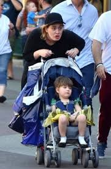
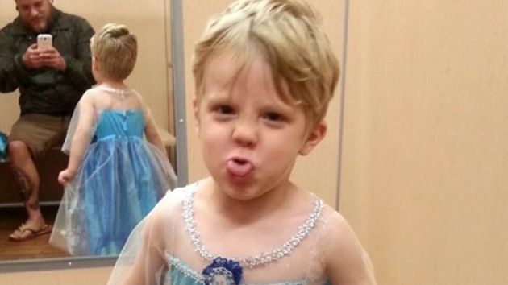
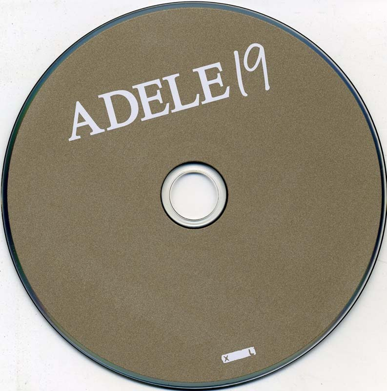
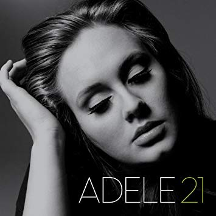
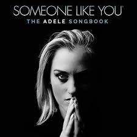
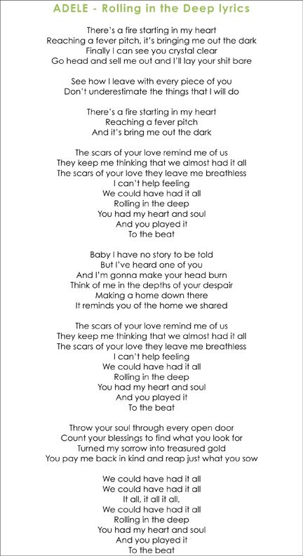

ADELE
Quién es
Es una cantante, compositora y multinstrumentista británica(Londres)
Nació el 5 de mayo de 1988
Qué es Londres
Londres es la capital y mayor ciudad de Inglaterra y del Reino Unido
Londres es una ciudad global, una de las ciudades más importantes en el ámbito de las artes, el comercio, la educación, el entretenimiento, la moda, las finanzas, los medios de comunicación, la investigación, el turismo o el transporte
Vida familiar
Adele tiene 1 hijo, Angelo Adkins
El niño tiene 4 años.
 
Carrera musical
¿Cómo se desarrolló su interés por la música?
El interés de Adele por la música surgió gracias a su madre.
Fueron juntas a grandes conciertos, y así, a los 4 años Adele comenzó a cantar. En 2003, a los catorce años, descubrió unos discos compactos de Etta James y Ella Fitzgerald en una tienda de antigüedades de música jazz, y a partir de entonces comenzó a escuchar a Etta James durante una hora todos los días. Con el paso del tiempo, conoció su propia voz. Ese mismo año, ingresó a la escuela de artes BRIT School.
Su primer Álbum
Su álbum «19», titulado así por la edad que tenía cuando escribió y compuso muchas de las canciones, fue lanzado en 2008, alcanzando el número 1 en los medios, lo que conllevó a que fuera certificado 4 veces como platino en el Reino Unido, y recibiera múltiples premios y nominaciones, entre las cuales se destacan la nominación para un premio Mercury Prize.
También recibió el galardón a Mejor artista de jazz en los premios Urban Music, y estuvo nominada en la categoría Mejor mujer británica en los Music of Black Origin.
Ganó además dos premios Grammy: Mejor Artista Nueva y Mejor Interpretación Vocal de Pop por una Cantante Femenina, y vendió más de cuatro millones de copias.

Su segundo Álbum
Su segundo álbum se llamó «21» también por su edad, se lanzó en 2011 con once canciones que habían sido escritas por ella. Un mes después fue publicado en Estados Unidos. El álbum fue un éxito comercial, lo que le convirtió en el cuarto álbum más vendido de todos los tiempos.

Su popularidad en Estados Unidos se debió en parte a la aparición de Adele en un episodio del programa de televisión, «Saturday Night Live», que sobrepasó todos los anteriores niveles de audiencia, en catorce años que llevaba al aire.
Canciones más conocidas
Someone like you
Mantenía una relación amorosa, imaginandose matrimonio, cuando el hombre la abandono porque estaba planificando su boda con otra mujer.

Escuché que te habías asentado,
que encontraste a una chica, y que ahora estás casado.
Escuché que tus sueños se hicieron realidad
Estos versos de la canción se refieren al matrimonio del hombre del que está enamorado con otra mujer. Adele se imagina con 40 años yendo a buscarle porque no le ha olvidado.
Hello
Adele habla en "Hello" sobre la reconciliación, no solo con una pareja (que también), sino con un amigo, un familiar, y especialmente con uno mismo.
Se trata de retomar el contacto con una relación perdida, de ahí esa simbología con los teléfonos, objetos que empleamos para hablar a distancia con alguien con quien nos cuesta más mantener el contacto de una forma más directa; y que sirve a su vez como la perfecta representación de retomar su relación con el mundo y sus fans tras su descanso de 4 años. Pide la redención después de un abandono, y esto es aplicable en prácticamente todos los ámbitos. Todo encaja a la perfección.

Rolling in the Deep
Cuenta la historia de una mujer que está totalmente enamorada de su novio. Su amor es tan grande que no le permite ver lo que está ocurriendo en la realidad.
En su mente, la chica piensa que puede confiar en su pareja. Cree que él le cuida la espalda; que es una persona con la que siempre podrá contar. No obstante, con el paso del tiempo, su razón (la cual es descrita como un fuego en su interior) comienza a alejarla de esa oscuridad hasta el punto en el que ella puede ver la imagen completa.
